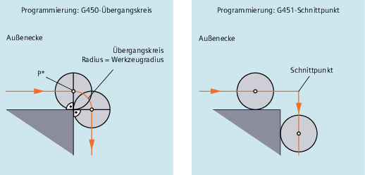
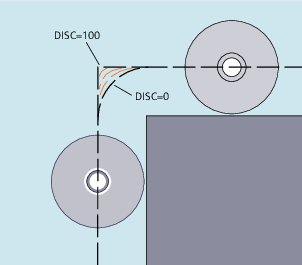

G450/G451
Umfahren einer 90°-Außenecke mit G450 bzw. G451
Im Zwischenpunkt P* führt die Steuerung Anweisungen durch, wie z. B. Zustellbewegungen oder Schaltfunktionen. Diese Anweisungen werden in Sätzen programmiert, die zwischen den beiden Sätzen liegen, die die Ecke bilden.
Der Übergangskreis bei G450 gehört datentechnisch zum anschließenden Fahrbefehl.
DISC
Bei Angabe von DISC-Werten größer 0 werden Übergangskreise überhöht dargestellt, hierbei entstehen Übergangsellipsen bzw. Parabeln oder Hyperbeln:
